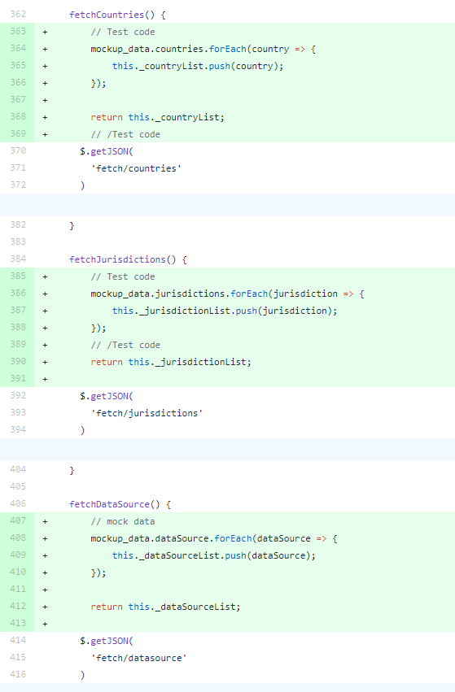
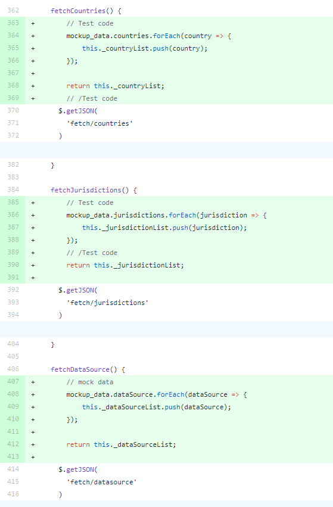

7. The Search App, consuming the Fetch API.¶
At this point, the API is ready. Congratulation!
The purpose of this tutorial was to only show you how to use Django + Neomodel to query a Neo4j database. We have covered that while making the API backend. Now it is time to consume the API.
We have provided a single web application that will search the Paradise Paper Graph Database. This application basically just makes requests to our API and display the response data in a convenient way.
Here are some screenshots of the app.

That is Search Home, where we can input the search text and filters.

That is Search Results. There, we can see nodes that matched our search filters. They are presented in tabular format.
{kind=link}
That is modal with more details of a specific node. We will see, for example, the connections of Entity node with others Officer or Intermediary nodes.
The tools used to build the Paradise Paper Search App frontend are probably pretty familiar to you(JavaScript, KnockoutJS, JQuery, HTML, Bootstrap). We will not give many details about its workings, but you can take a look if you want to.
The search app communicate with the API through GET HTTP requests. We are using the JQuery
$.getJSON ajax shorthand method to construct these requests. That way we load JSON-encoded data
from our Fetch API.
Here are some examples we actually use in the app.
Getting some nodes:
$.getJSON(
'fetch/nodes',
{
'q': 'apple', // search text
'c': 'Monaco', // country
'j': 'PMA', // jurisdiction
's': '', // source
'p': 1 // page
}
)
.done(nodes => {
// Do something with each node
nodes.response.data.forEach(node => {
console.log(node.node_properties);
});
})
.fail(() => {
// Handle errors
console.log("Fetch error");
})
.always(() => {
// Always do something at end
});
Getting node details:
$.getJSON(
'fetch/node',
{
'id': 10033457, // node id
't': 'Entity', // node type
}
)
.done(node => {
// Do something with node
console.log(node);
})
.fail(() => {
// Handle errors
console.log("Fetch error");
})
.always(() => {
// Always do something at end
});
Currently the Search App is not making any requests. Instead, it is using some mockup data. But now that we have Fetch API working, we can use that.
The code that made the requests is already in place, but It is not executed because we load or return mockup data first. In order to change that, go ahead and remove or comment lines of code that load or return the mockup data.
The file that you need to change is the paradise_papers_search/static/js/search.js.
Check this screenshots to know what lines you need to remove. They are highlighted in green.
 

{kind=link}
After that, the application should work.
Go ahead and play around!